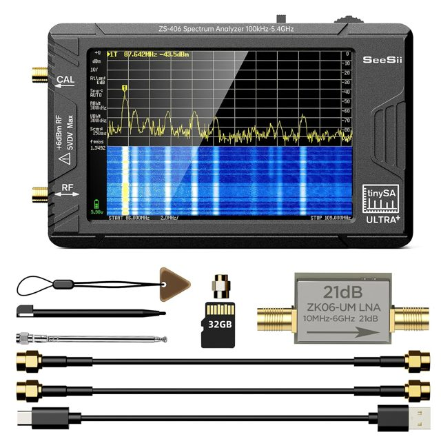

Lab note · 2026-09-06 · Channel E focus · Hively EED · Lady Lake garage
C × nuclei — Channel E (EC / charge density) first article
Educational design note focused on the experiment path Lee Hively steered toward: C-wave modulation of radioactive decay is allowed by EED; chemical / S-orbital charge-density effects on electron-capture rates; an experiment is the only way to validate. Not a claim that decay-rate shifts were measured on this bench.
Hively reply · 2026-09-05/06 (paraphrase, not a private-email dump): Lee’s read is that C-wave modulation of radioactive decay is allowed by EED, and that an experiment is the only way to validate the effect. He points to peer-reviewed chemical-compound / S-orbital charge-density decay-rate variability (Channel E lean — not Channel G as first). Later checks found smaller shifts than early reports, but nonzero. EED hook he names: ρ c² C in the energy balance or J·C in the momentum balance; he does not yet have a clear theoretical model. Literature table: Hively decay-rate variability note (PDF). Do not strengthen contested solar/Fischbach claims from this banner.
Public summary (do not strengthen): This page proposes falsifiable coupling sketches between Hively’s dynamical scalar field C and nuclear degrees of freedom. It is a theory/experiment design note. It does not claim anomalous heat, decay-rate shifts, or mass change were observed here.
Scope lock: This is not an SW detector (see SW vs SLW). Nuclear / decay / EFG / interferometry side channels remain optional SLW effects (or SW-leaning Φ probes when triad-logged), not SW proof. Adjacent LENR / AHE / Alzofon–Sokol threads are labeled adjacent — not Hively C proof. Do not strengthen Alzofon, contested solar/Fischbach decay, or mass-change claims.
Joule / SW thread: his read of the Grok note is that C-wave modulation of radioactive decay is allowed by EED; “An experiment is the only way to validate the effect.” Earlier: SLW has Joule loss; SW/C does not (but 1/r²); a solid C×nuclei model would be publishable. Contested solar/Fischbach framing is his conversation context — this page does not elevate it.
Channel-G vote reply + Word note: peer-reviewed chemical-compound / charge-density decay-rate variability (S-orbital near the nuclide). Examples he named (early literature magnitudes; later checks often smaller but nonzero): Tc compounds ~0.27%; BeF₂ vs Be metal ~0.08%; Nb⁹⁰ᵐ metal vs NbF₅ ~3.6%; I-131 solution vs crystals ~0.5%. EED hook: ρ c² C in energy balance or J·C in momentum; he does not yet have a clear theoretical model.
Dan’s reading: prioritize Channel E (EC / chemical environment / density-at-nucleus) for a first garage bound next to the 1296 / 433 MHz SLW benches. Channel G and other sketches live in the archive.
What Hively’s C is
From Hively & Land, J. Phys.: Conf. Ser. 1956 012011 (2021), and the hub’s SW vs SLW note: EED promotes the Lorenz leftover to a physical dynamical field
C ≡ ∇·A + (1/c²) ∂Φ/∂t
with wave equation
∇²C − (1/c²)∂²C/∂t² = −μ (∂ρ/∂t + ∇·J)
and energy density ∼ C²/(2μ). Split used on this hub:
SLW: B=0, C≠0, longitudinal EL ∥ ∇C
SW: E=B=0, C≠0
Hively’s short-time charge-fluctuation reading of the RHS (Heisenberg-style continuity mismatch) is his interpretation; it needs independent tests. Reed & Hively, Symmetry 12, 2110 (2020), is a related EED companion when a deeper math tip is useful — not required for this nuclear sketch.
Why EC fits the publishable hook: if C (or EL) modulates electron density at the nucleus, electron capture is the decay family that already shows accepted chemical sensitivity. Rentzber’s conserved-current energy-null (detail in archive) also pushes away from “just count betas” toward EC / EFG / phase observables. A null bound is publishable.
The experiment (Channel E)
Channel E · 7Be EC · density-at-nucleus meter · mainstream
Electron capture as the right decay family
The 7Be EC rate depends on electron density at the nucleus. Chemical hosts change λ by ~0.1–1% — a known, small, accepted effect class (classic Johlige / Segrè; modern implant / host papers; Be@C60). Unlike contested solar-modulation claims, this is textbook nuclear / atomic physics.
Segrè & Wiegand, Phys. Rev. 75, 39 (1949) — early atomic-electron effect on 7Be.
Ohtsuki et al., Phys. Rev. Lett. 93, 112501 (2004); 98, 252501 (2007) — 7Be@C60 vs Be metal (~0.8–1.5%).
Implant/host precision campaigns, e.g. Phys. Rev. C 75, 012801 (2007) — host-material systematics.
Experiment: place a calibrated 7Be source (or other EC nuclide) near an SLW launcher with environmental locks; look for RF-on vs RF-off bound on |δλ/λ| beyond the chemical baseline. A publishable null is OK.
Framing: if C or EL modulates local electron density / continuum at the nucleus, EC is the right decay family — not generic β Geiger counting alone. Fits Rentzber’s non-adopted-current observable class.
Hively literature note (2026-09-05): chemical-form Δλ/λ table for EC nuclides (⁷Be, ⁵⁵Fe, ⁵⁷Co, ⁶⁵Zn, …) with Emery / Hahn / Norman / Tossell lineage — PDF. Educational hub mirror of a correspondence compilation; not garage results.
Recommended detector (buy):Radiacode 103 CsI scintillator spectrometer (~$319) — energy spectrum so you can ROI-count Co-57 / Cd-109 peaks for RF-on vs RF-off bounds. The Amazon FNIRSI-class GM dosimeter on kit.html#garage stays bag inventory only.
Garage sourcing (US, educational):7Be is the literature poster-child but is rarely a casual NRC-exempt catalog disk (short half-life / production). Practical exempt-quantity EC (or mostly-EC) sealed disks from vendors such as Spectrum Techniques / ORTEC check-source lines include Cd-109, Co-57, Mn-54, Zn-65, Ba-133, Eu-152; soft-X Fe-55 may need a thin-window / soft-X detector. Keep activity at exempt Schedule B levels (typically ≤1 µCi class disks as sold); verify Florida / Agreement-State rules; educational framing only — not medical use, not redistribution into devices. Full costed table + FL disposal: Hobbyist buy list.
First-article sketch (Lady Lake): fixed geometry · exempt EC disk (prefer Co-57 or Cd-109 at ≤1 µCi) · Radiacode-class spectrometer ROI on the photopeak · RF-on vs RF-off with the existing SLW launcher (1296 sleeve or 433 balls — sequential, separate feeds) · T / humidity / background locks · log TinySA TX power and Faraday state. Do not claim chemical Δλ/λ from a sealed disk alone (that needs chemistry). Goal: educational |δλ/λ| or count-rate bound vs C-proxy amplitude.
Applicable garage kit tools
Full inventory: kit.html#garage. Photos below are vendor/product images for Steve (technician) — same Amazon / manufacturer items Dan shared. For this Channel E path:
Photo
Instrument
Qty / status
Role on Channel E
Link

SeeSii TinySA Ultra+ ZS406
3 on hand
SLW TX / SA on 1296 and 433 benches — the C / EL source side, not the nuclear meter.
Product photos from manufacturer / vendor pages matching Dan’s Amazon shares (SeeSii/TinySA, FNIRSI GC-01 class, AlphaLab TriField, Images Scientific disks, Radiacode). For Steve: the nuclear path is Radiacode + exempt disk; TinySA is the RF source; the blue GM unit is bag-check only.
Open literature (no hub PDF): Johlige et al. PRC 1970; Segrè & Wiegand 1949; Ohtsuki et al. PRL 2004/2007; Emery Ann. Rev. Nucl. Sci. 1972; Norman et al. Phys. Lett. B 2001; Tossell EPSL 2002
Hobbyist buy list · sources & detectors (for Hively comment)
Lady Lake, FL garage budget sketch — not purchased yet unless noted. Prices are vendor-page snapshots (~Sep 2026); confirm before ordering. Educational / exempt-quantity framing only. Dr. Hively: please comment on which instruments and sources are worth buying for a first Channel E-style bound vs which to skip.
Ask for Lee: Given EED allowance of C-modulation of decay and the chemical/EC literature note, which of the detectors and ≤1 µCi EC disks below would you rank for a hobbyist first article (ROI photopeak counts, RF-on vs RF-off, environmental locks)? What would you reject as a false economy?
Energy spectrum + isotope ID; ROI-count Co-57 (122 keV) or Cd-109 (88 keV) for RF-on/off bounds. Far better than a GM dosimeter for publishable educational nulls.
FNIRSI-class / “Premium” GM dosimeter (LCD, cps/cpm) — on hand
~$40–60 (Amazon share)
Bag check / coarse counts only. Energy window often ≥~48 keV; ±30% class accuracy; RF-susceptible near TinySA TX. Not the Channel E instrument of record.
Florida is an Agreement State. Typical Spectrum Techniques / Images Scientific disks at ≤ Schedule B activities are sold as NRC exempt quantity — no specific RAM license for possession of that single exempt unit, but confirm FL rules before order. Prefer 1 µCi class. Do not open, grind, dissolve, or redistribute into devices. Not medical use.
Nuclide
On Hively Word table?
~1 µCi street price
Notes for garage EC path
Buy / catalog
Co-57
Yes (chemical-form Δλ/λ)
~$98 (Images Scientific CO-57-1)
First-pick disk with Radiacode: 122 keV γ. ~272 d half-life.
Suggested first cart (hobbyist): Radiacode 103 (~$319) + Co-57 1 µCi (~$98) ≈ ~$420 before tax/ship (+ optional Cd-109 ~$98). Keep the Amazon GM as bag inventory. TinySA Ultra×3 already cover the RF benches (kit.html#garage).
Florida garage · storage & disposal of exempt check sources
Keep sealed. Never open, crush, dissolve, incinerate, or “repurpose” the epoxy disk. Label clearly: “Exempt radioactive material — educational check source” with nuclide, activity, and date.
Store: secure drawer/box away from kids/pets; optional small lead pig for γ disks; inventory list; do not mix with licensed material if you ever hold any.
Do not assume the trash is fine. ORTEC-class literature sometimes says exempt disks present “no special storage or disposal requirements,” but municipal landfills and haulers vary. Best practice for a Florida hobbyist: return to the manufacturer/distributor (Spectrum Techniques, Images Scientific, or the seller’s RSO path) or transfer only to a specifically licensed recipient — expect a fee. Indefinite “I’ll figure it out later” storage is a poor plan.
Do not mail casually when disposing — ship only under the vendor’s/broker’s instructions (USPS/DOT activity limits apply).
Florida contact (confirm current numbers): DOH Bureau of Radiation Control, Radioactive Materials Program — floridahealth.gov · Radiation Control · materials line 850-245-4545 · FLRAM@FLHealth.gov · emergency 24 h 407-297-2095. Ask how they want a private individual to retire an unused exempt sealed disk in Lady Lake / Lake County.
Buy less: one Co-57 (or Cd-109) disk is enough for a first null; skip the RSS8 set until Lee ranks it useful.
Costs: Images Scientific public catalog and Radiacode list prices sampled ~2026-09-06. Spectrum Techniques often “ask for price.” Not legal advice; not a FL DOH endorsement. This section is an invitation for Hively critique, not a purchase order.
What this is not: free energy, over-unity, medical advice, Meyl kits as SW evidence, a private Hively email dump, or a street address. Contested decay-rate (solar/Fischbach) and Alzofon–Sokol claims are not strengthened here. Inclusion of adjacent literature is not endorsement. EED’s C is not identified with a beyond-SM Yukawa scalar boson.
Source: educational model sketch · Channel E focus rewrite 2026-09-06 · prior wider-net revision 2026-09-05 · Hively correspondence paraphrased (not a private-email dump). Archive · Learn · Lab · Setup · Kit · Library · SW vs SLW.